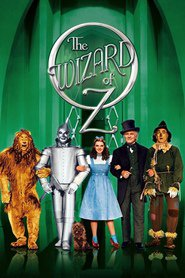

The Wizard of OZ
Dorothy Gale is swept away from a farm in Kansas to a magical land of Oz in a tornado and embarks on a quest with her new friends to see the Wizard who can help her return home to Kansas and help her friends as well.
- Judy Garland -- Dorothy
- Frank Morgan -- Professor Marvel/The Wizard of Oz/The Gatekeeper/The Carriage Driver/The Guard
- Ray Bolger -- Hunk/The Scarecrow
- Bert Lahr -- Zeke/The Cowardly Lion
- Jack Haley -- Hickory/The Tin Man
- Billie Burke -- Glinda
- Margaret Hamilton -- Miss Gulch/The Wicked Witch of the West
- Terry -- Toto
1939

Marcus Nelson